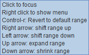

Modify the Color Bar Interactively
Click the color bar in the Legend to interactively modify the color bar. Holding the cursor over the color bar shows the interactive color bar editor instructions.

Image 1: Interactive Color Bar EditorThese controls are activated once the color bar is clicked on in the Legend.
- Right-clicking on the color bar will open a drop-down menu with an option to open the Color Table Editor, change the range of the color, change the color bar to a different saved color bar, etc.
- Ctrl+R will revert the color bar back to its initial range after modifications have been made to it.
- The Right arrow shifts the range of the color bar up, raising both the upper and lower bounds.
- The Left arrow shifts the range of the color bar down, lowering both the upper and lower bounds.
- The Up arrow expands the range of the color bar by lowering the lower bound and raising the upper bound.
- The Down arrow shrinks the range of the color bar by raising the lower bound and lowering the upper bound.